Nathan Nye

This aims to cover the history of Nathan Nye in the past unofficial Jacksonville Linux Users Group community. There are many different and unique people in the world, but it takes a special kind of person to pretend to be a college student, to walk onto a college campus, to embed in student college clubs, to partake in student club activities as if you are a college student, which you are not. This is not to disparage Nathan, but this is exactly what Nathan Nye did at University of North Florida (UNF), after not receiving a degree from his time at Florida State University (FSU), among other community activities.
Nathan has a few monikers, Github handle noproto, Discord handle np0 (548357534994399237), Blue Sky handle np0, YouTube handle np0, and for reference, Nathan's LinkedIn profile.
This is a complex work in progress to fully cover all details. The information presented is adequate to revealing unbecoming community conduct, including fraud and plagiarism at the highest levels of academia; UNF a public R2 research university and NASA Lunabotics collegiate competition!
FSU Origin
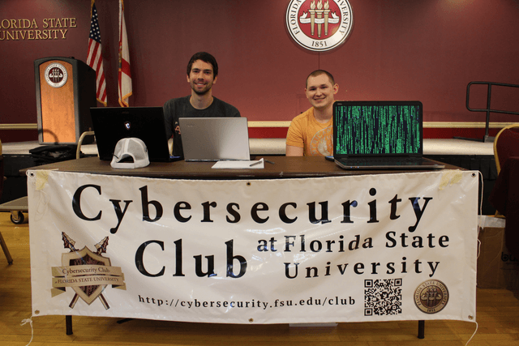
Nathan's origin is unknown, what is known is that Nathan was a student at Florida State University (FSU) in Tallahassee, Florida. All information suggest that Nathan was not awarded any degrees or certificates from FSU. Per Nathan's own Nathan's LinkedIn profile, where he states that he was a student from 2015-2018.
This can be further confirmed by a few online articles, there are likely more. In 2016, per this FSU College of Communication & Information article Nathan Nye was the President of FSU's Cybersecurity Club, where he began his interest in Capture-The-Flag (CTF) security competitions. The next year in 2017, Nathan was still active in that FSU student club as a student of FSU, per this article, it is unknown what title Nathan held in 2017, that is irrelevant. In 2018, Nathan's final year at FSU, he was still active in the club per this article, and Nathan seems to be both President and his new title of Systems Administrator, which that title first appeared in this presentation from 2017 on CTFs.
This is Nathan's known origin, he was a student at FSU, but he was not awarded anything per his Nathan's LinkedIn profile. At one point, Nathan was a college student, participating in that colleges student clubs. Why this ended is unknown, as is his status at FSU. Why he did not remain in Tallahassee to foster the student security club he was a member of, or other activities with FSU community is unknown.
JaxLUG Round 1
The exact date that Nathan first showed up to the past unofficial Jacksonville Linux Users Group community was sometime in 2019, as evident by this announcement on 11/14/2019 of an upcoming presentation, which Nathan gave and was recorded and uploaded to YouTube, on a project of Nathan's that has not gained industry interest WhiteBeam.
WhiteBeam is a strange story, there seems to be some company behind it, White Beam Security, Inc. per their website and on github per WhiteBeamSec, which Whitebeam is hosted under. The WhiteBeamSec organization on Github has no public members, which clearly, Nathan is the sole coder, per all WhiteBeam commits. On Nathan's LinkedIn profile, he states he is the Chief Technology Officer. When you look into the state filings for WhiteBeam Security Incorporated, it gets more interesting, no mention of Nathan, no legal status or standing, and the person listed, Richard Benham J.D., is a law professor at FSU. Their relations are unknown, how the company came to be, why from a Law vs computing professor, etc.
Nathan gave one other presentation to the unofficial Jacksonville Linux Users Group on Terraform, but since the group did such a poor job of managing the history archives, the dates of that and the other are mixed up, which came first is unknown at this time. However, those are the only two known presentations, and when Nathan was first present in Jacksonville, Florida communities sometime in 2019.
UNF Mistake
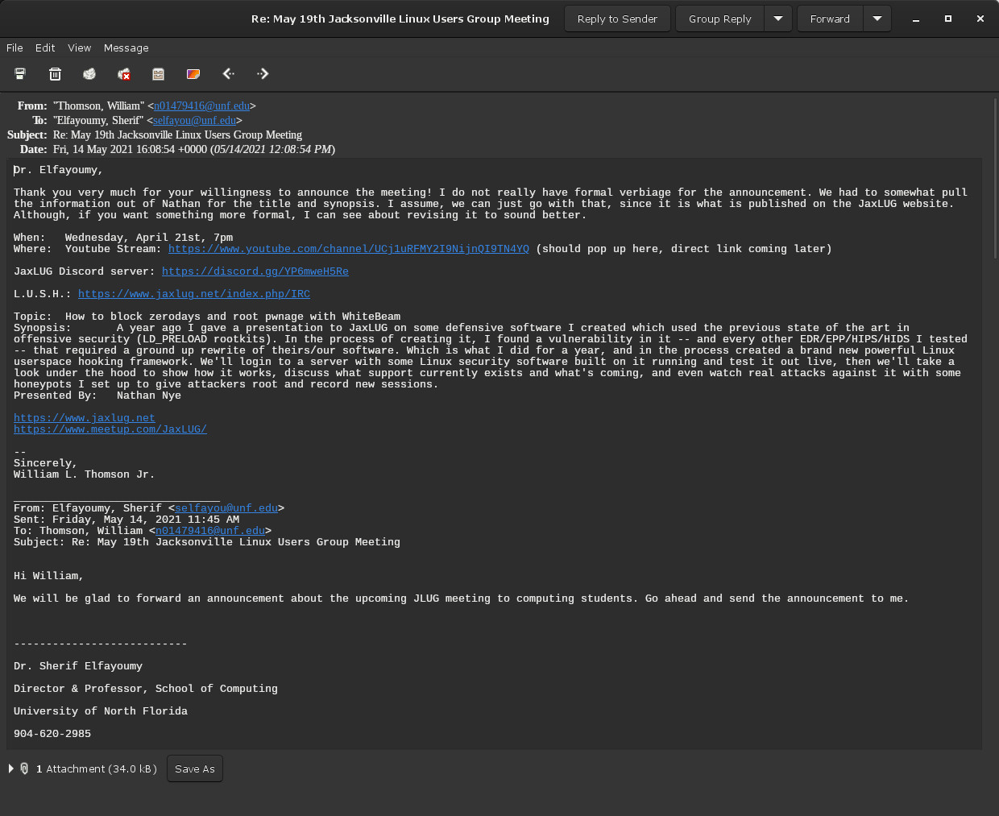
In 2021, as a Computer Science undergraduate student attending UNF, William L. Thomson Jr. made a grave mistake of having UNF's School of Computing announce an upcoming unofficial Jacksonville Linux Users Group meeting where Nathan Nye was to once again present on his WhiteBeam. William went out of his way to ensure UNF promoted this event, even doing a very rare Canvas announcement, which was done by the former SoC Director Dr Sherif Elfayoumy, who has since left UNF to become a Dean at Purdue.
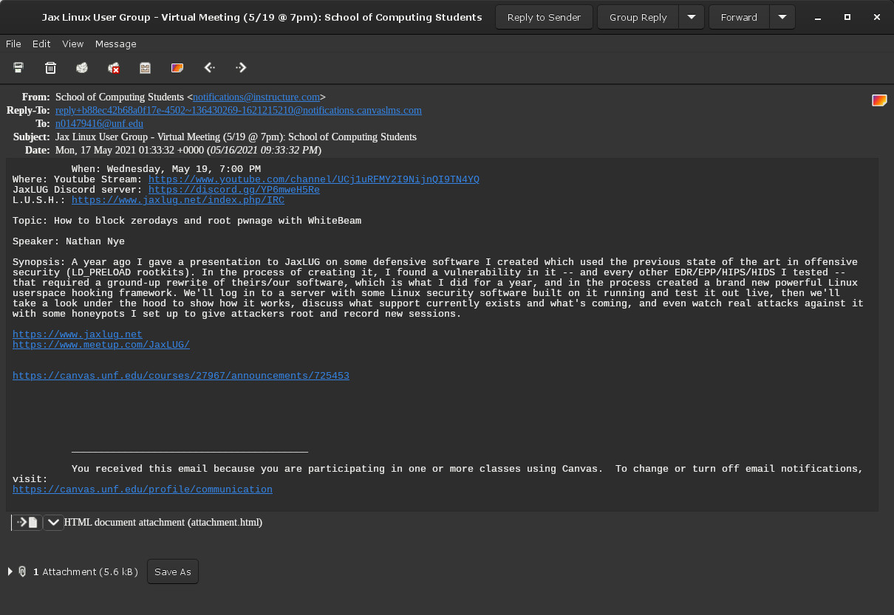This event was held virtually on Discord, and the turn out was very poor, shockingly poor, the exact number is unknown at this time, but it was around 10 or less, definitely no where near 20 or more. Given the promotion at UNF, this was a very bad turn out, much less from Jacksonville. WhiteBeam, strike two! This is also when Nathan decided to embed himself within UNF, and it is possible, Nathan was already involved in UNF student security club, Osprey Security Club (OSEC) where Nathan may have embedded himself as a resident expert dating back to 2020. This cannot be verified, but William recalls seeing Nathan in building 15 one night in 2020, and that would most likely have only been for an OSEC meeting.
UNF Osprey Robotics Club
This part of Nathan's story was unknown to William at the time of the events, in 2021 through 2022, however, given William having just unknowingly exposed UNF, students, staff, and faculty, to Nathan. Nathan seemed to seize on this opportunity to become involved with UNF's student Osprey Robotics Club. It is possible, Nathan was already involved with UNF's student Osprey Robotics Club, and also UNF's student Osprey Security Club (OSEC). Additional research will have to be done for the OSEC connection, though that is easily proven with his history in OSEC discord. Regardless, Nathan was involved, he was in club pictures, wearing student government paid for club t-shirts, standing next to the clubs faculty college professor Dr Kreidl.
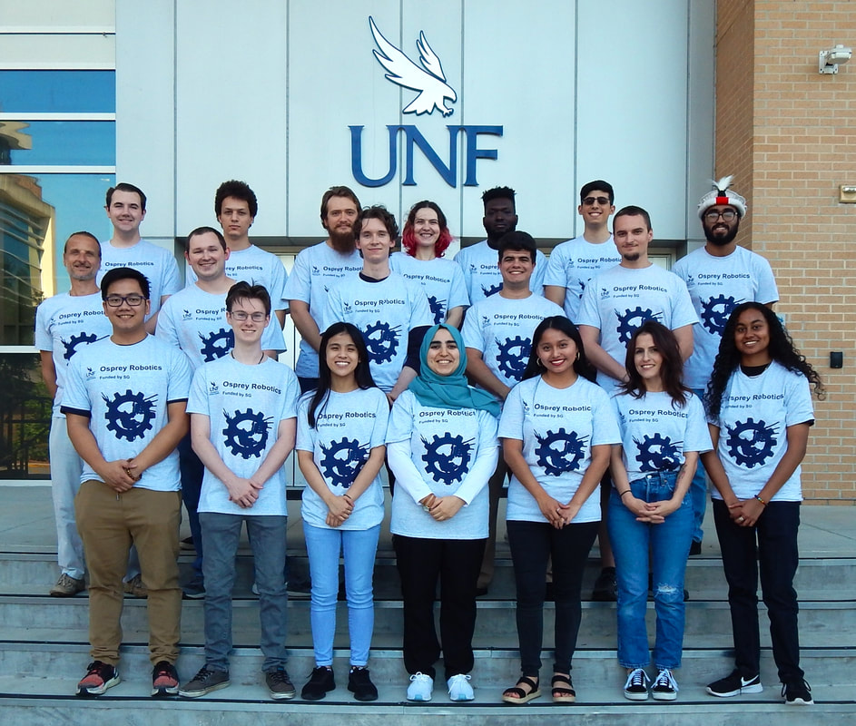Nathan, second row, second from left, standing next to Dr. Kreidl, the UNF faculty Osprey Robotics Club advisor.
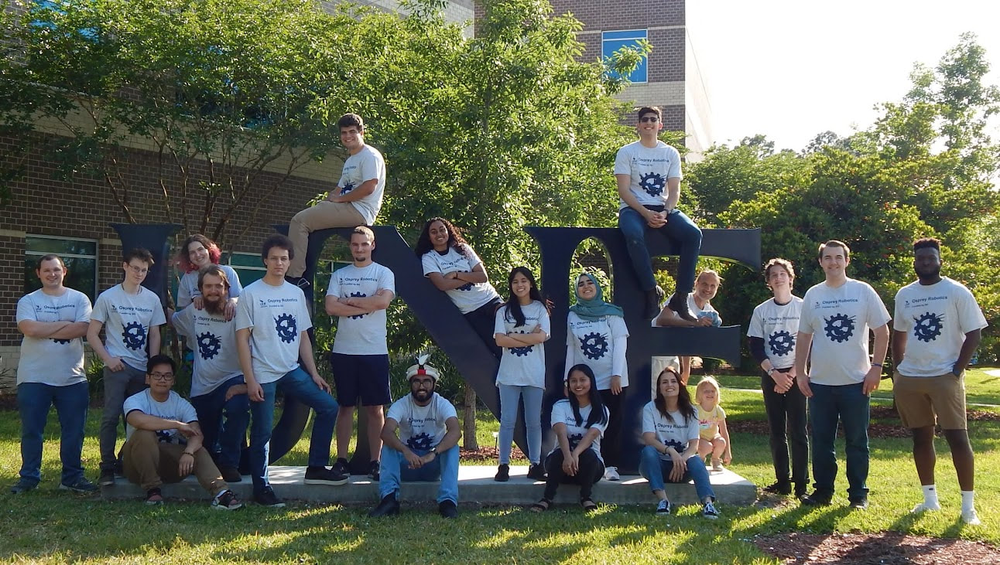
Nathan on far left, Dr Kreidl in the top of the letter F.
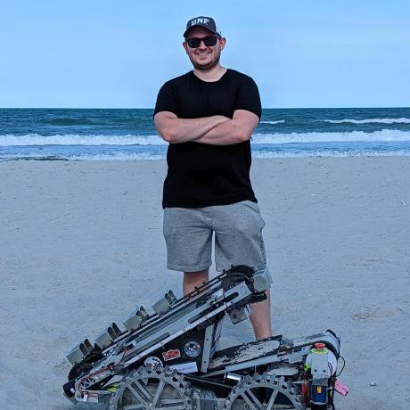
This gets much worse, the Osprey Robotics club in Fall 2021 through Spring 2022 semesters entered to compete in NASA's collegiate Lunabotics Challenge, that has open student requirements, simply requiring being a college student, at bachelors or masters level, of any age, there are few restrictions. It is possible, even registered "Staff" can participate, though this is ideally intended for people affiliated with a competing college. Nathan was present during build and participated on many levels. His Github profile has him with a UNF hat and the 2022 UNF NASA Lunabotics Osprey Robotics robot. Many UNF students, such as William, were completely unaware, and it went deeper!
There are numerous other photos of Nathan and his activities around the Fall 2021 through Spring 2022 UNF student Osprey Robotics club, viewable on their old website.
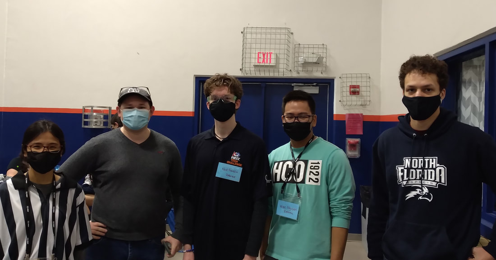
One of the things college clubs compete in NASA Lunabotics Competition must do is youth STEM outreach, where events are held for college students to work with younger elementary students in a STEM activity event, which should related to the Lunabotics competition and/or robots in some way. This is one of the categories that colleges compete in.
Here is Nathan, second from left, pretending to be a UNF student, at The Bolles School, a private college preparatory school that William L. Thomson Jr. attended when young. While Nathan is not wearing any UNF gear, this is an event that per NASA's rules, and likely Bolles' assumption, that is done by UNF students, under UNF/Bolles insurance, etc. This was unknown to William at the time, as Bolles would have been notified as well as UNF!
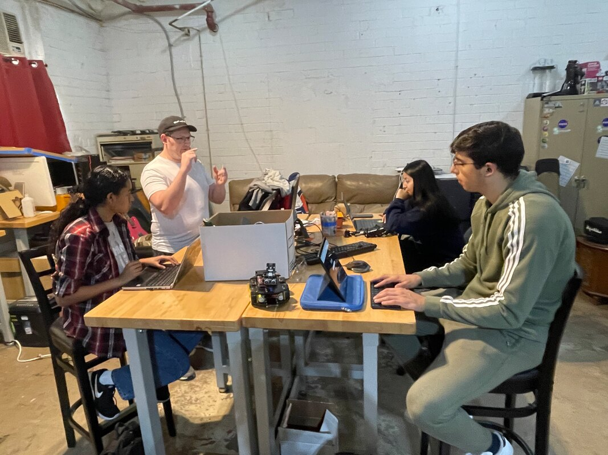
Nathan didn't stop there, Nathan went on to single-handedly write all the code, for what was to be, per NASA's Lunabotics rules, to be coded by college students, potentially with external guidance, but code was to come from college students, giving them such learning opportunity and career skills!
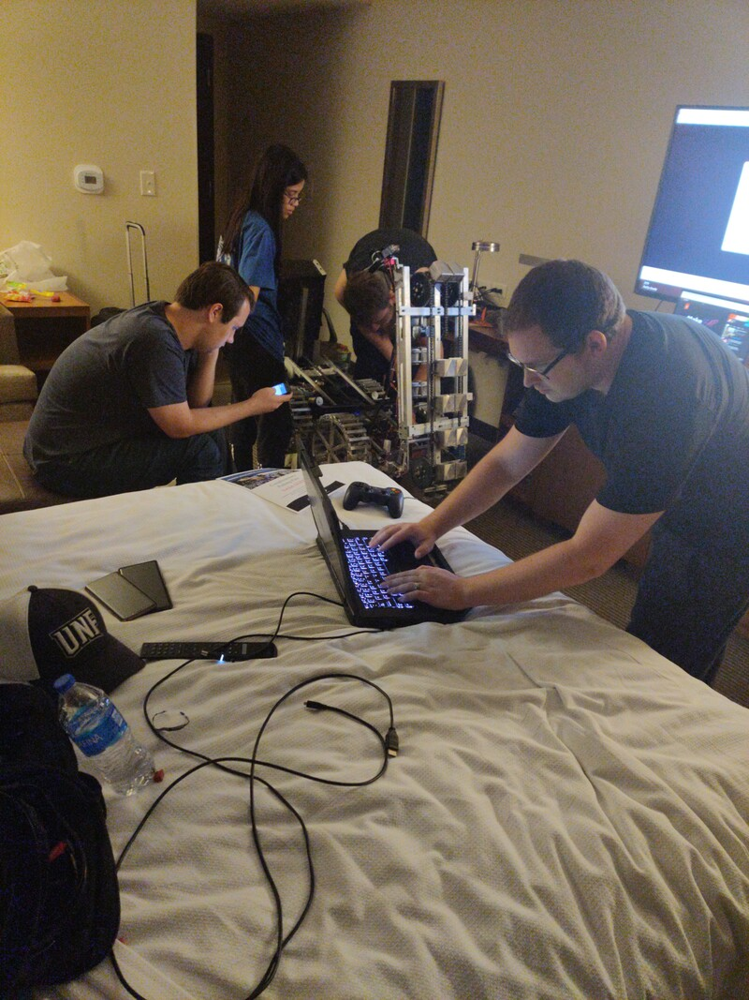These are peers of William, an active UNF student, but again, William, nor most all UNF SoC students in 2021-2022 calendar years had any idea this was taking place, aside from those in the Osprey Robotics club such as Andrew Baroutjian, whom William had an intro to robotics class with Fall 2022, which was after Fall 2021 and Spring 2022 semesters Nathan was involved with Osprey Robotics club. In fact, it was Fall 2022, in Dr Dutta's elective Intro to Robotics Course that William first learned of the student Osprey Robotics club, despite being a UNF SoC student in the Computer Science discipline since 2020.
Andrew is the sole other male in the picture with the two female UNF students, wearing greenish sweat gear. William knows Andrew can code, he had a robotics class with him, he worked with him, Andrew was around the UNF student Osprey Competitive Programming Club (OCP), where both Andrew and William are ranked on Kattis, where OCP learns and practices, as evidence of each programming skills, or at least interest in programming and algorithms. William was around OCP since its founding in 2021, and remains in touch with both founders, as well as having attending OCP meetings as of Fall 2025.
No UNF student code was on the UNF robot that attempted competition in 2022 NASA Lunabotics! The robot was paid for by funding from UNF student government and grants from NASA! Nathan even went to the event, there he had to fix his code in the hotel room one night midst of the event, after the first round/day, again showing and proving, no UNF student code was on the UNF robot! Nathan robbed paying UNF students attending Fall 2021 and Spring 2022 semesters of the benefits of such, which Nathan has used to his advantage since to advance his career and standings in the community!
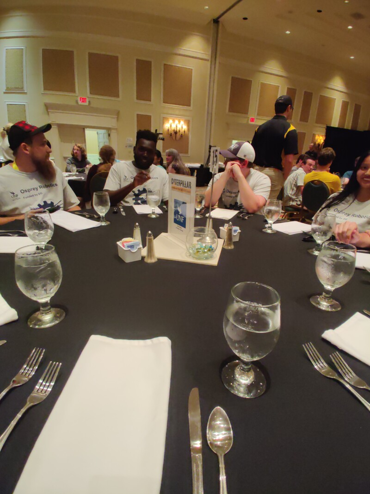That wasn't enough for Nathan, he had to even attend the student only dinner NASA held, and once again, wore a UNF student government funded t-shirt, conducting live plagiarisms and fraud, pretending to be a UNF student at a NASA event for college students only! It is fitting he is not facing the camera during the picture, knowingly or otherwise, but actions and the picture, speak louder than any of these words. This timeline video on youtube is worth watching, implying students code was involved and Nathan involved in machining...
Nathan's involvement in UNF student Osprey Robotics club in Fall 2022 and Spring 2023 is unknown, as William was just taking Intro to Robotics in Fall 2022, where he found out about Osprey Robotics and met Andrew. William stopped by Osprey Robotics meeting in Fall 2022, but they were not entering NASA Lunabotics, he had minimal knowledge of it all, including the club and its activities, or Nathan's involvement.
In Spring 2023, William was set to enter UNF masters, but that did not happen, and unfortunately, his application had expired, and without refiling was unable to attend Fall 2023. William, as UNF undergrad alumni, first became involved with UNF student Osprey Robotics club in Fall 2023, where he crossed paths with Nathan for the first time in many years, before becoming aware of events already covered. That is seen in this video on youtube, at 0:10 Nathan can be seen in the corner by the door with khaki shorts and black hat and shirt, across room from William, and William can be see interacting with many wearing a dark blue shirt, khaki shorts, grey Osprey hat. Every person in that room other than Nathan has a valid UNF Osprey One Card, students and Alumni William. William encouraged the club to participate in NASA Lunabotics competition in Spring 2024, requiring entry Fall 2023, as it spans one college academic year, summer excluded.
Fast forwarding, William entered the masters program Spring 2024 at UNF with a concentration on robotics having spent Fall 2023 working with the robot from 2022, replacing Nathan's code with William's UNF student written ROS2 code, which exists in this osprey_ros repository, along with two docker containers, docker-ros2-iron and docker-ros2-iron-gz-rviz2 that William made to provide a complete development environment for the club, himself, any current and future UNF students! This includes a full simulation environment using CAD files produced by UNF ME students, groundbreaking work that had never before taken place at UNF, or anywhere in Jacksonville for that matter!
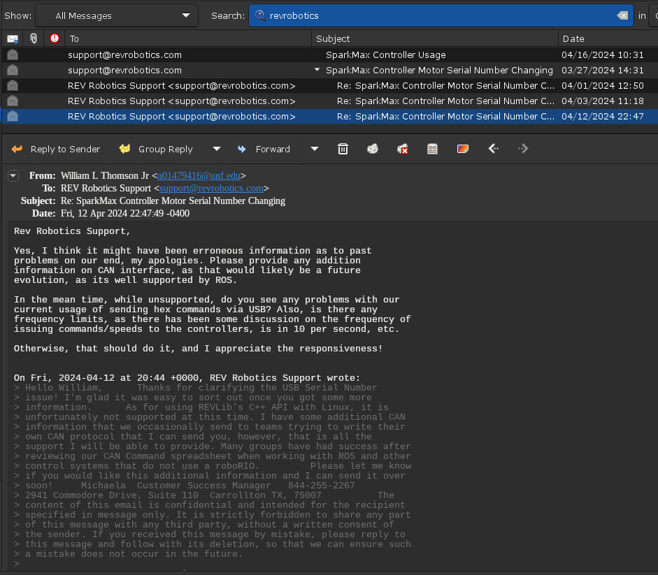While William was ignorant to Nathan's involvement at UNF and the past 2022 NASA Lunabotics competition, he was cordial to Nathan, respecting his club seniority, though not as a student, but respectfully interacting and involving him, once again a big mistake by William. Later on as problems arose, Nathan proceeded to become involved in matters that were not his domain. Nathan began to exhibit to William he did now know what he was talking about, and not being a student, Nathan had no right to be there, nor interfere with student college educational activities, such as club matters. Nathan sent William on wild goose chases reporting issues such as hardware serial numbers changing that William took to the manufacturer RevRobotics, as he did other issues; not only was Nathan wasting Williams time but also RevRobotics.
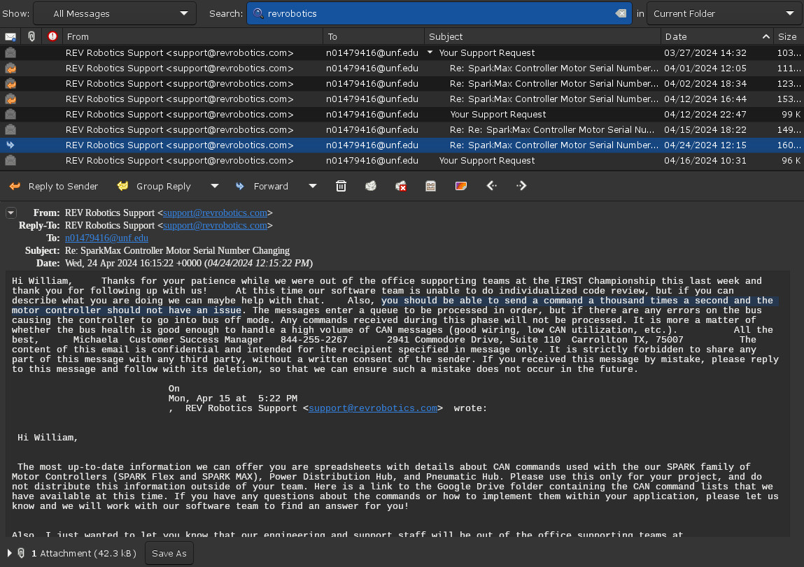Case in point, during initial testing of the new robot built for 2024, it was exhibiting odd failures with wheels stopping. At one point, this fried a motor, which is not cheap. This is where Nathan got involved and he should not. It turns out, a single unsupervised arts student on their own had assembled the transmissions incorrectly, manufacturer sent four precise ketchup packets of lubrication per four transmissions, and only two were used per four. The transmissions were not properly lubricated, it was inconsistent, and it caused the load on wheel to be so great the power draw fried the motor but was not of the nature to cause a fuse to break, thus motor failure.
Nathan incorrectly blamed this on code sending commands to fast, not having a clue as to the real problem, which William discovered by doing A/B testing with the 2022 robot he had spent months with. William went in one day, fired up both robots, listened, and the sound difference was considerable due to the under lubricated transmissions. Plus, William knew the ROS2 code, it sent commands at a consistent interval, at idle and under motion, there was no difference. There literally was no way to send commands to fast, they were sent under a clock, a fixed and consistent interval! Furthermore, as evident by email communication, William confirmed this with the manufacturer, Nathan's entire thought and resolution process on the problem was incorrect, and he had UNF students blinded to such facts!
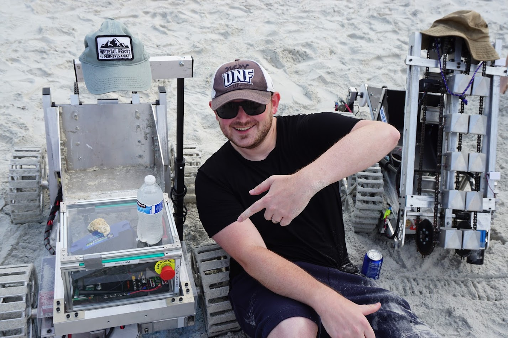It is one thing to walk onto a college campus pretending to be a student, another pretending to be some expert, yet another to interfere with other peoples expensive paid education, and finally, to challenge a top academic student at said college; to take on a top gamer at their own home-field game. Some people!
Unfortunately, other students, listened to Nathan over their own peer, a UNF undergraduate alumni and a current masters graduate student both in UNF CS programs. Tragically, this remains the case, year-after-year, and Nathan as seen as some expert in the UNF student community, respected, etc, in part why this page exists and this information is bring provided.
William's ROS2 code was replaced with Nathan's code from 2022 as soon as Nathan had the opportunity, and despite the response from RevRobotics, Nathan proceeded to use a female UNF CS student, who was there to learn and did not know otherwise, to proxy commit Nathan's changes to his code that slowed the rate commands were sent to the motors. This commit can be provided for factual reference, but we prefer not to expose the female UNF student, who may not have returned to UNF as of Fall 2024.
This among other things caused tremendous problems, the UNF Osprey Robotics club was pulled from the 2024 NASA competition over plagiarism, over Nathan and another non-UNF student's involvement. This was after they were successful in having William, a masters graduate student, removed from the club, with 2 weeks left in Spring 2022 semester, as the club was set to come to an end. They failed to elect new leaders, which William inquired about to Deans who are still unaware of club duration and terms, and as of Fall 2024 there was no more Osprey Robotics. Mostly due to Nathan's continued involvement and his overall conduct, the club did not end because of William! In fact, Deans prevented William from keeping the club alive come Fall 2024, but Nathan was directly involved in the demise of Osprey Robotics club. There are many more details, this is a much bigger story that UNF has worked hard to suppress.
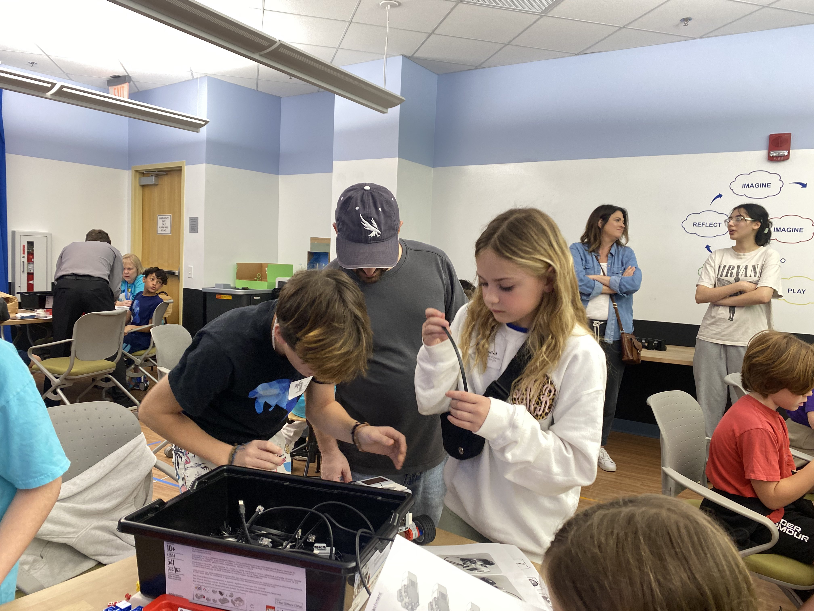While William could not attend, despite being a current masters graduate student in Summer 2024 classes while others were not enrolled in any summer courses, or others like Nathan no affiliation to UNF, they took the 2022 and 2024 robots to the beach, Osprey Robotics Beach day 5/25/2025, thousands of dollars of equipment! At one point drove the 2024 robot into the ocean salt water, a robot designed for the waterless moon. Nathan so proudly posing with him having written the words "Non" and "Student" above and below UNF on his hat, for non-UNF student, which was how William referred to him and another. They even went so far as to name the 2024 robot, Will.I.Am, which one would think is for the musician, but those who know, know it to be a pun on William.
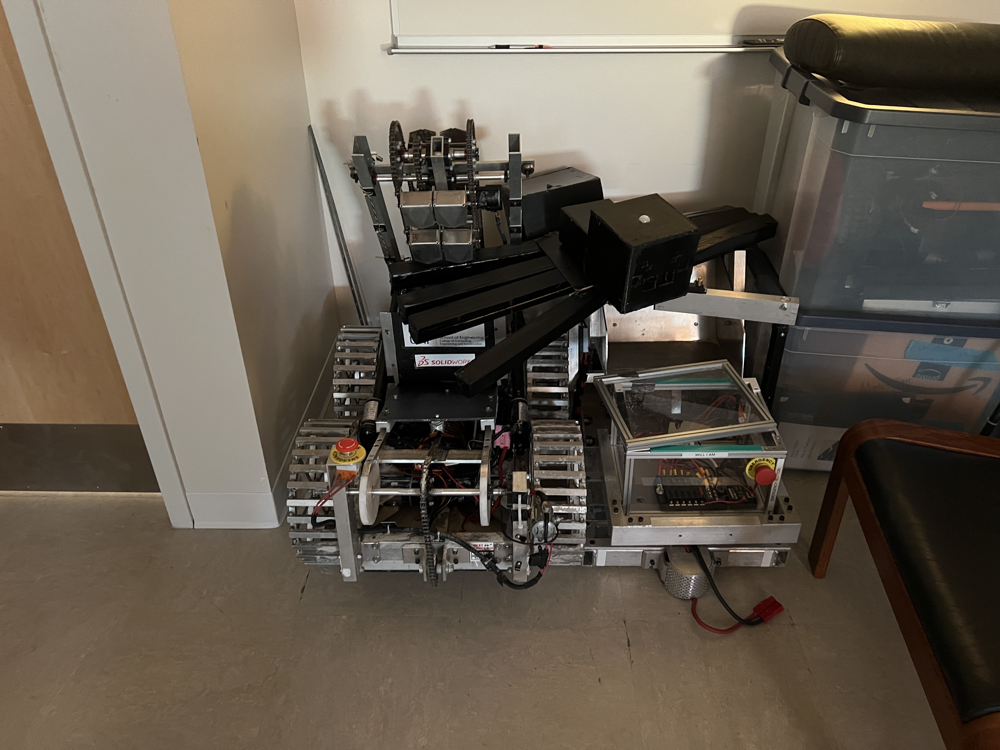For those who want to say, hey it was William, well, UNF won 1st place in the 2024 NASA Lunabotics STEM Outreach category, which UNF was happy to cover in this article. This was primarily due to the work of Ned Franklin a talented UNF student, who created the concepts, 3d printed materials, planned, and scheduled the events. William attended one of the larger, more impactful ones at UNF, working with 4th and 5th-grade students from Neptune Beach Elementary. William can be seen here working with students, it was only Ned and William at this event, along with one other female student who later joined Osprey Robotics as a result, who is visible with the Nirvana shirt to the far right, with Ned to the far left bending over helping some other students. What UNF did with the $1000 prize money, William could not find out, but the Osprey Robotics Club was and is no more; UNF did something with the money!
William in part, helped UNF Osprey Robotics club to receive 1st place in the 2024 NASA Lunabotics STEM outreach category, with William also having done the text write up on the event to sell it to NASA engineer judges. It is possible, William may have helped UNF win in other categories such as the very coveted automation, as William continued work on robotic autonomous navigation through his masters at UNF. This was not only a major setback for UNF and the community, but also William. No students have touched either robot in years, and the 2024 robot had its wheels removed. But Nathan went on to get a job at a space company, True Anomaly .space. Guess this all worked out well for Nathan, but for UNF students and the wider community.
What code remains on the two robots? UNF William's ROS2 code, or Nathan's what ever code...
UNF Osprey Security Club (OSEC)
This section will have to be filled in as more information is discovered. This is an area William is not familiar with as William was not a member of OSEC during his time at UNF from 2020 through 2024. William was in the OSEC discord, but that was all, he had only attended a couple of sparse meetings, maybe two in the 4 or so years. William did engage with OSEC in 2025, attended a single meeting, was approached by no one, posted resources in Discord, and then was removed from Discord. Upon raising said issue to UNF, UNF Dean Winter, acting against all published club bylaws, against all procedures, when club advisor Larry Snedden was out of town, removed William from OSEC. This seems to be to protect OSEC relationship with the B-Sides conference, which mysteriously, with no student involvement, OSEC became the venue sponsor for B-Sides starting in 2023.
Post masters graduation, William can now look into such matters without fear of retribution from UNF, specifically, Dean of Students Rachel Winters, who has abused her authority on numerous occasions. What is known, is that Nathan has been, and as of the end of 2025, remains deeply embedded in UNF Osprey Security Club (OSEC) having started long ago at FSU and for what ever reason that coming to an end, so Nathan has found a new home and domain at UNF! Unfortunately, students semester after semester fall prey to Nathan, young influential adults who are not experts in security, but sure make Nathan feel as if he is one!
With enough information, it is possible this section of Nathan's history with UNF OSEC would far exceed all others. It is very possible the entire history of OSEC and CTF challenges is directly tied to Nathan per his past activities at FSU, which most at UNF are likely completely unaware of! Something happened with Nathan at FSU, and he ran to UNF instead, and not as a student! Nathan could have at any time taken a single course, but has not, and at this point, should be banned from ever setting foot on UNF campus! That will be one of the many issues William will be undertaking with UNF in the next year, as a safe Alumni and public citizen, not a student subject to abuse of power!
JaxLUG Round 2
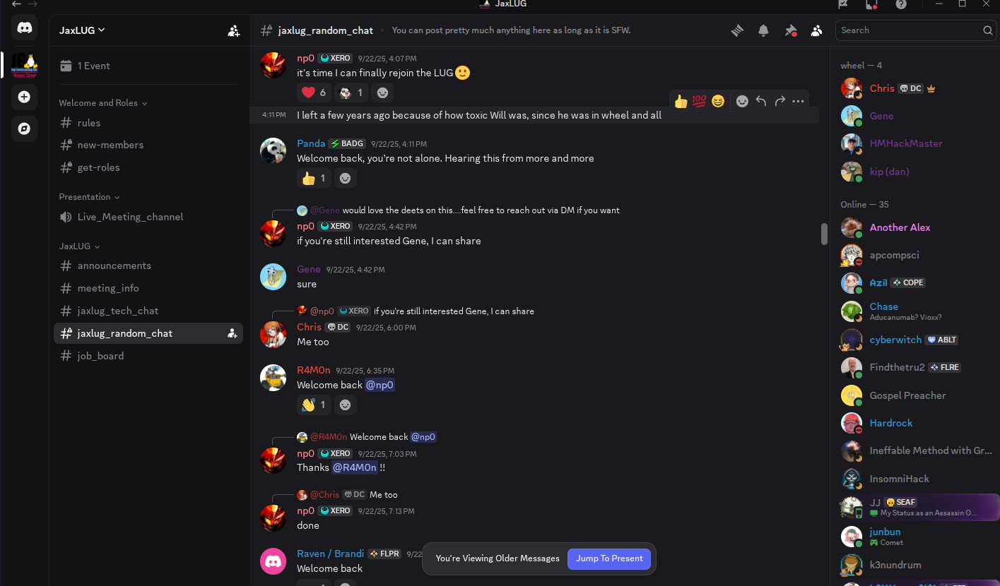
Finally, it all comes home, back to where things started at least in Jacksonville. Due to William taking issue with fake leadership of the past unofficial Jacksonville Linux Users Group, and their actions, Nathan was quick to rejoin the past unofficial Discord server to shame William, and making false statements that William was the reason for Nathan departing the group. Clearly, William had no involvement, as he was busy with studies at FSCJ from 2018 to 2020 and UNF from 2020 till 2025, and hardly active if even present in the unofficial communities anything.
In fact, it was at UNF one night in the Arena Parking Garage, after a Osprey Robotics Club activity where Nathan and William walked to cars together; William walked and talked to Nathan's parked wife's Tesla. Nathan proceeded to disparage the unofficial Jacksonville Linux Users Group community, saying he left because he saw no value, and agreeing with points William raised on being IT/Sys admin vs development focused, which William was most interested in development. Nathan had all sorts of sentiments that he knows he shared with William, and William knows it, therefore, for Nathan to show up saying he left over William. Nathan knows himself that is a false statement, or said more bluntly, that Nathan is lying! After all, he has no issues pretending to be a student, no matter what rules at UNF, NASA, etc.
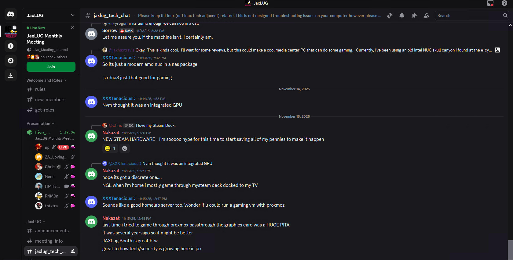Nathan avoids William because Nathan is afraid, not of harm, but afraid of being called out, afraid of the truth! Nathan knows his actions, and he has worked hard to spin things his way for years. Many within UNF, within OSEC, and crossing into the past unofficial Jacksonville Linux Users Group have animosity towards William because of Nathan. Many who have never met William in person, but may have met Nathan. While at UNF, Nathan had better access than William and other UNF students, so this is of no surprise to William. It is just unfortunate with so many gamers, that people routinely end up as Non-Playing Characters (NPCs), and when it comes to Nathan, most of you are NPCs!
That Nathan was welcomed back by and presented for the unofficial Jacksonville Linux Users Group at Keiser University in November 2025, is just so fitting. The fall from grace! Starting at FSU, then embedding as a fake expert at UNF, and then presenting at Keiser University is just so fitting and telling! A skilled person would go the opposite direction. UNF is a great college, but is not FSU, and Keiser University is not even a research university, no where near UNF, and none are anything like UCF, MIT, Stanford, Berkeley, Illinois, etc. You don't start at FSU to present at Keiser, you start at Keiser and work hard to eventually presenting at FSU!
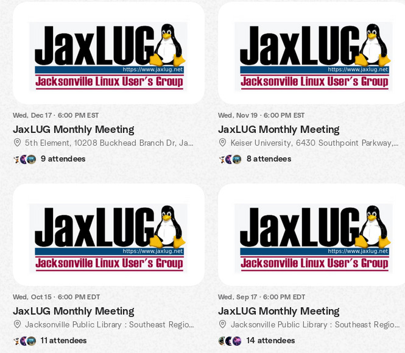That leadership of the unofficial Jacksonville Linux Users Group shunned William and welcomed Nathan, knowing much of the above from William, but their animosity toward William drove them to embracing Nathan, and all the baggage and shame he comes with. In life, people will give you what you need, you just have to give them room to show others their true nature, and they did all that with embracing Nathan, birds of a feather flock together! Once again, nobody turned out for Nathan's presentation, yet again! Maybe people will start to learn to have presenters that actually attract an audience! More people came to the year end social than Nathan's meeting, which seems to be the lowest attended of the year, just so fitting all around, well done everyone, William thanks you!
Most who attend FSU, would never attend UNF afterwards, much less Keiser, but Nathan will find audience, or prey, anywhere. It is also pretty amazing how people in security, do not know the background of alleged security experts, just taking them at face value, despite all facts, and others with validated skills. Like college or not, its a game, you get a score, and if you play well, you score well, any good gamer should know better than to challenge those with high scores, but for some reason even in education, that falls short. People will continue to view Nathan as some expert and William, well, however they do, haters will always hate, and players will always play the game win or lose. Facts are what they are, and security people should really perform better due diligence! Its easy to claim to be an expert, but get a college to certify that you are, or anyone but yourself! What happened with Nathan at FSU?
University of Florida coming to Jacksonville will be interesting, and you can bet Nathan will be no expert at UF Jax, but the official Jacksonville Linux Users Group Inc. may very well have a relationship with UF Jax!